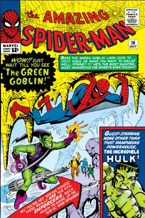
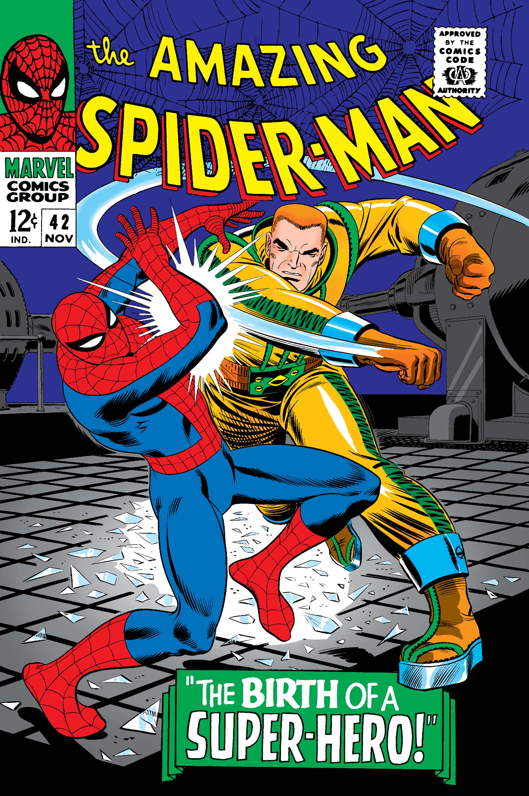

The 1960s era marked the birth of Spider-Man and the foundation of his legacy. From teenage
struggles to
unforgettable first battles, these early issues established the heart, humor, and humanity that
would
define Spidey for generations.
Milestones
Key issues from Spider-Man’s 1960s era – origin, early rogues, and defining Silver Age stories.
Years1962–1969
Key creatorsStan Lee & Steve Ditko
ToneSilver Age, street-level, experimental
Origin
Amazing Fantasy #15 (1962)
First appearance of Spider-Man & Uncle Ben’s “great power” lesson.
First solo title
The Amazing Spider-Man #1 (1963)
Launch of Peter’s ongoing series; early J. Jonah Jameson
&
Daily Bugle drama.

New villains
ASM #14 – Green Goblin (1964)
First appearance of the Green Goblin, a villain who will
define
the saga.

Supporting cast
ASM #42 – “Face it, Tiger” (1966)
The iconic full introduction of Mary Jane Watson.
TV · Animation
Spider-Man (1967–1970)
The first animated Spider-Man series, famous for its theme song and surreal,
low-budget visuals. It brought Spidey into living rooms and helped cement
the “Friendly Neighborhood” image.